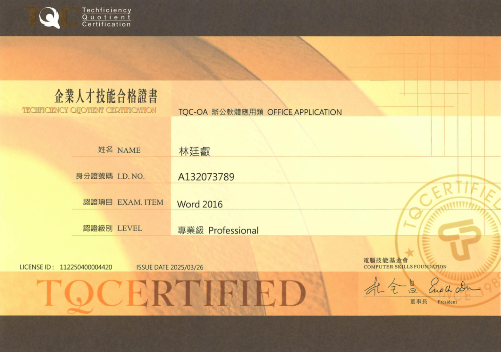
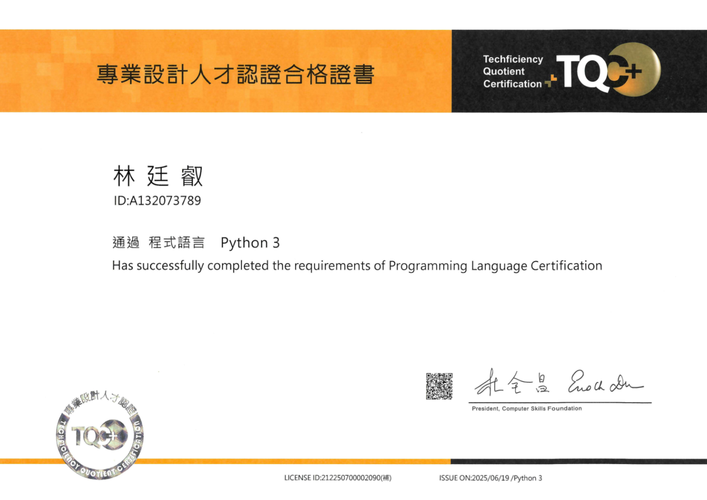
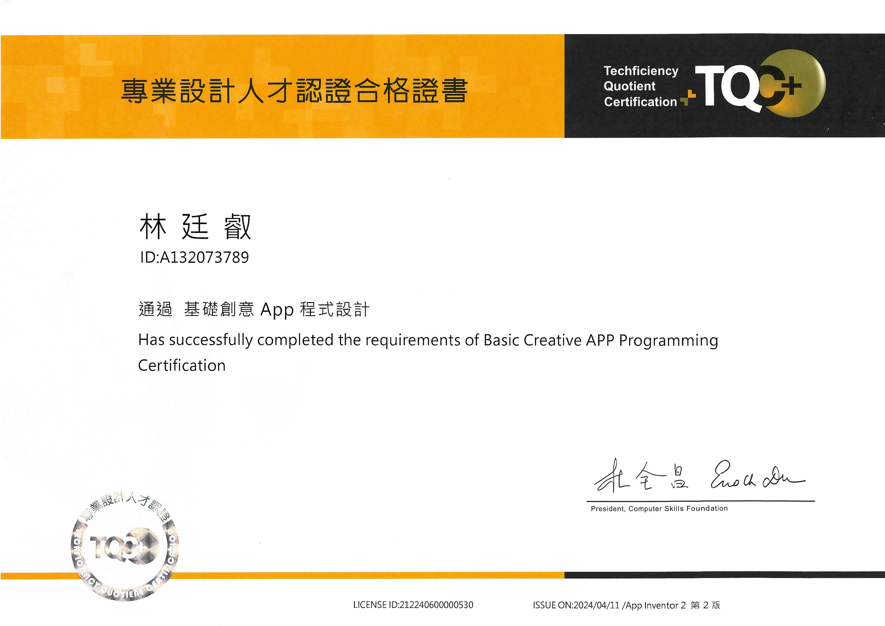
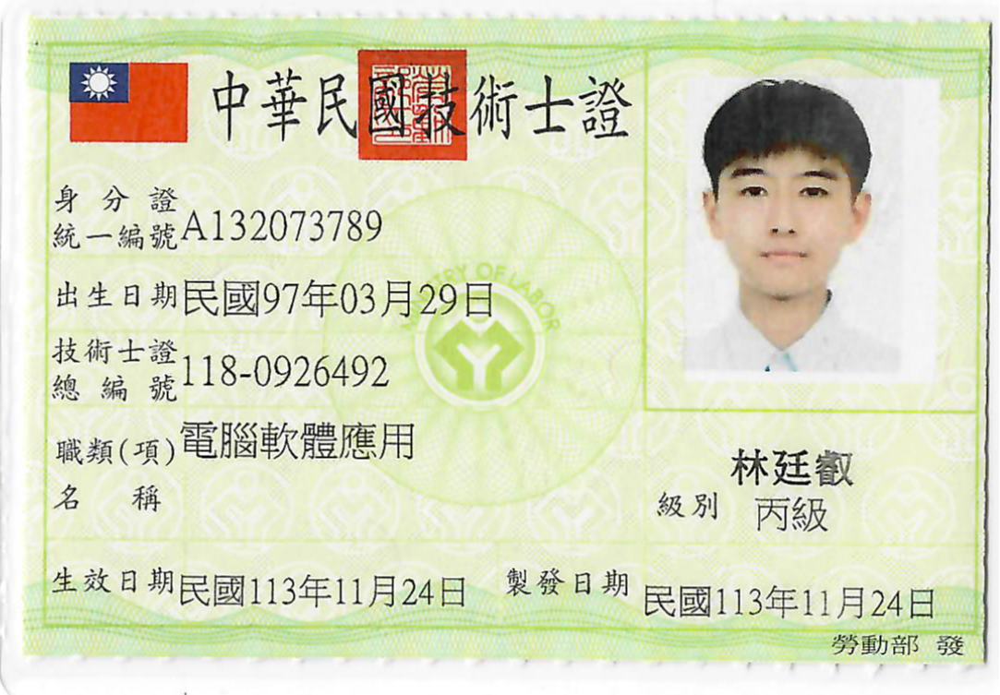
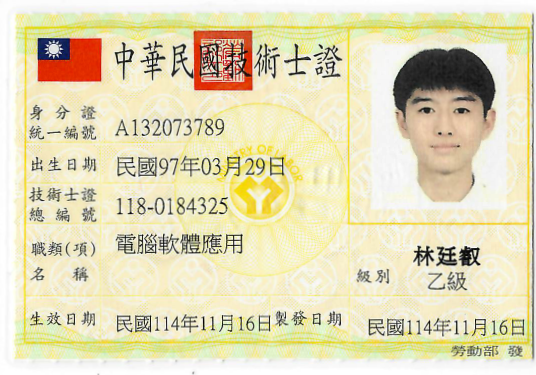

TQC+ PowerPoint－專業級
在準備 PowerPoint 證照的過程中， 我學習簡報設計、動畫效果與版面配置， 也提升了資訊整理與視覺表達能力。 透過反覆練習，我更熟悉如何讓簡報兼具美觀與重點呈現。
返回證照區



TQC+ Python 程式設計－進階級
在準備 Python 證照的過程中， 我反覆練習條件判斷、迴圈與程式邏輯， 雖然一開始常因語法與除錯問題卡關， 但透過持續練習， 培養了邏輯思考與問題解決能力。
返回證照區
TQC+ App Inventor 程式設計
在學習 App Inventor 的過程中， 我接觸到手機應用程式開發的基本概念， 並透過積木式程式設計理解程式邏輯與功能運作， 提升了對資訊科技與應用開發的興趣。
返回證照區
